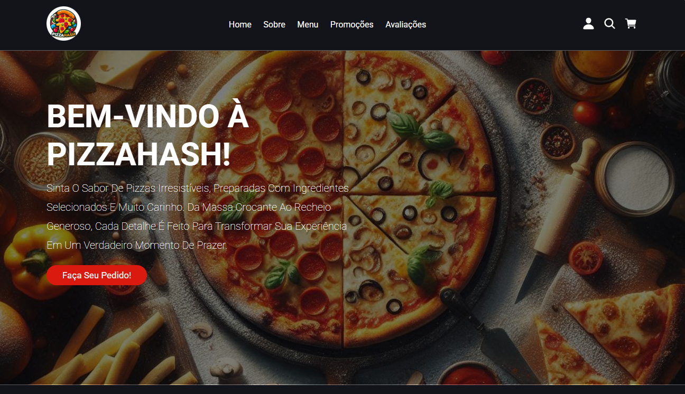
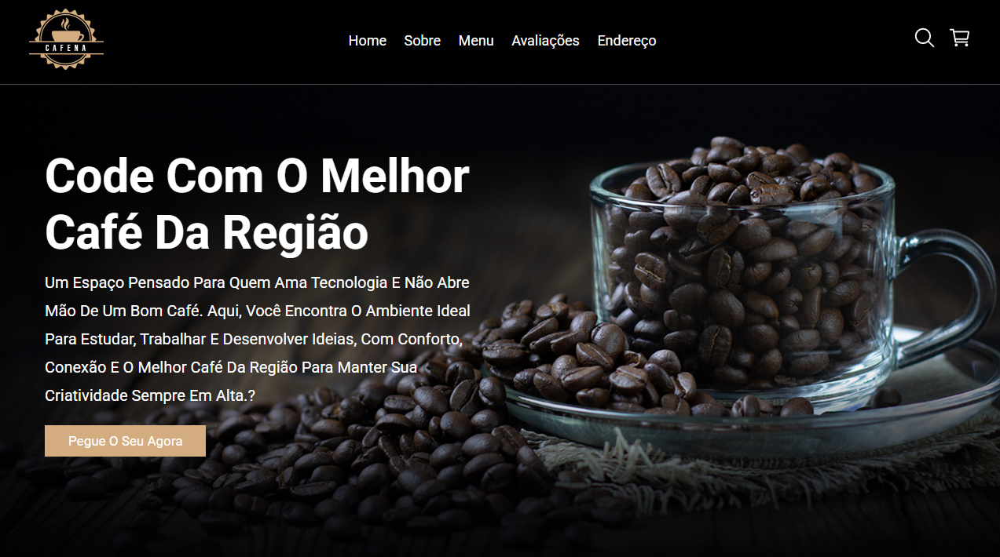
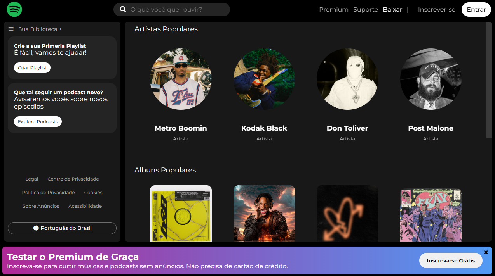
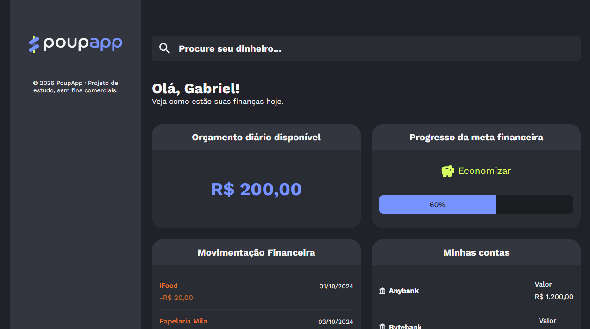
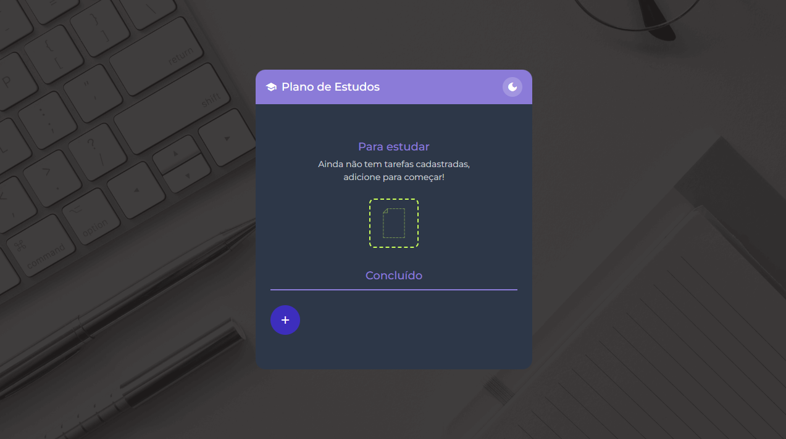

PizzaHash
Projeto de uma pizzaria desenvolvido com HTML, CSS e JavaScript, com interface responsiva e design moderno.
Olá, meu nome é
Sou desenvolvedor Front-End, focado na criação de interfaces modernas, responsivas e acessíveis. Atualmente estudo React e outras tecnologias do ecossistema web, desenvolvendo projetos que unem boas práticas, desempenho e uma ótima experiência para o usuário.
Conheça-me melhor
Olá! Sou Gabriel Pereira, desenvolvedor Front-End em constante evolução e apaixonado por criar interfaces modernas, responsivas e intuitivas. Atualmente curso Análise e Desenvolvimento de Sistemas e busco transformar cada novo aprendizado em projetos que reflitam minha evolução. Acredito que um bom código não é apenas funcional, mas também claro, organizado e capaz de proporcionar uma experiência agradável para quem utiliza a aplicação.
Atualmente, concentro meus estudos no desenvolvimento Front-End, evoluindo constantemente em JavaScript, React e nas boas práticas de desenvolvimento web. Também venho estudando Back-End para ampliar meus conhecimentos e me preparar para, no futuro, atuar como desenvolvedor Full Stack.
Com o que eu trabalho
Ferramentas e linguagens que estudo e utilizo para construir projetos.
Estrutura semântica, acessível e organizada para interfaces web.
Estilização responsiva, layouts modernos e interfaces bem estruturadas.
Lógica de aplicações, interações e funcionalidades dinâmicas.
Criação de interfaces dinâmicas com componentes reutilizáveis.
Automação de tarefas, scripts e desenvolvimento de soluções.
Controle de versão, organização de código e fluxo de desenvolvimento.
Repositórios, projetos e colaboração online.
Consultas, análise e gerenciamento de dados.
Uma seleção dos meus
Alguns projetos desenvolvidos durante minha jornada de aprendizado, explorando novas tecnologias e aprimorando minhas habilidades em desenvolvimento web.

Projeto de uma pizzaria desenvolvido com HTML, CSS e JavaScript, com interface responsiva e design moderno.

Site de uma cafeteria desenvolvido com HTML, CSS e JavaScript, com foco em responsividade, organização do código e uma interface elegante.

Interface inspirada no Spotify desenvolvida com HTML, CSS e JavaScript, focada na reprodução de um layout moderno, responsivo e interativo.
Projeto desenvolvido em React para cadastro e visualização de eventos, com criação de registros através de formulário e uma interface simples e intuitiva.

Aplicação desenvolvida em React para visualização e organização de gastos financeiros, apresentando dados fictícios através de uma interface intuitiva e moderna.

Aplicação desenvolvida em React para prática do Redux, explorando gerenciamento de estado e organização de dados em uma interface de planejamento de estudos.
Entre em contato
Busco oportunidades para aplicar meus conhecimentos em desenvolvimento web, contribuir com projetos e continuar evoluindo profissionalmente.
Vamos conversar